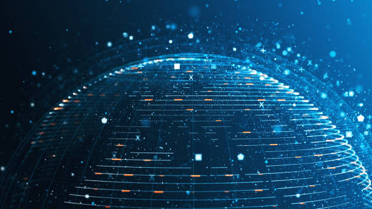

Hur ser webben / tekniken under 2021
Hur blev webben efter utvekclingen?
I år 2021 har webben och tekniken utvecklats mycket. Det finns flera trender och tekniker som är vanliga just nu, till exempel:
Responsiv webbdesign: Det är viktigt att webbplatser ser bra ut och är lätta att använda på alla enheter, såsom smartphones och surfplattor.
Cloud computing: Många företag använder sig av molntjänster för att lagra data och köra program, vilket gör det enklare att arbeta på distans.
AI och maskininlärning: Tekniker som AI och maskininlärning används för att göra webbplatser och appar smartare och mer användarvänliga.
Säkerhet: Eftersom mer och mer data hanteras online, är säkerhet en allt viktigare fråga.
Webbläsare: Nya webbläsare som Chrome, Firefox, Safari, Edge etc är utvecklade med bättre prestanda, säkerhet och användarvänlighet.
Progressive Web Application (PWA): PWAs är webbappar som beter sig som nativa appar, med push-notiser, offline-stöd och snabbare laddningstider.
5G-nätverk: 5G-nätverk är på väg att bli mer utbrett, vilket kommer att göra det möjligt att ladda ner och visa innehåll snabbare än någonsin tidigare.
Så, förutom de tidigare nämnda trenderna finns det andra områden inom webben och tekniken som har utvecklats mycket under 2021:
Virtual Reality (VR) och Augmented Reality (AR): VR och AR används nu för allt från spel och underhållning till utbildning och företagsanvändning. Det finns flera olika plattformar och verktyg som gör det enklare för utvecklare att skapa VR- och AR-upplevelser.
Chatbots och automatiserade svar: Chatbots används för att svara på vanliga frågor och hjälpa användare med att navigera på en webbplats eller en app. Dessa tekniker används för att förbättra kundtjänst och förenkla processer.
Edge computing: Edge computing är en teknik som gör det möjligt att köra program och bearbeta data nära användaren, snarare än i molnet. Detta kan göra det möjligt för användare att få snabbare och mer tillförlitliga tjänster.
Blockkedjor: Blockkedjor används för att skapa decentraliserade system som gör det möjligt för användare att verifiera och dela information utan att behöva litar på en central aktör. Dessa tekniker används för allt från finansiella tjänster till supply chain management.
Internet of Things (IoT): IoT gör det möjligt för enheter att samarbeta och dela data över internet, vilket ger möjligheter för automatisering och realtidsövervakning. Denna teknik är viktig för utvecklingen av smarta hem, smarta städer och industri 4.0.